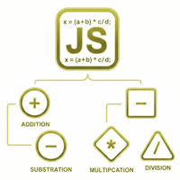

JavaScriptの「演算」

- JavaScriptの役割は、メモリ上で計算結果を計算する「演算」と結果をブラウザに表示する「DOM」に別れます
- プロンプト例
JavaScriptでの演算とDOMを詳しく解説して
JavaScriptの演算（Operators）
1. 算術演算子
- 数値の計算（四則演算）
| 演算子 | 意味 | 例 | 結果 |
|---|---|---|---|
| + | 足し算 | 5 + 3 | 8 |
| - | 引き算 | 5 - 3 | 2 |
| * | 掛け算 | 5 * 3 | 15 |
| / | 割り算 | 6 / 3 | 2 |
| % | 余り（剰余算） | 7 % 3 | 1 |
| ** | べき乗 | 2 ** 3 | 8 |
let a = 10; let b = 3; console.log(a + b); // 13 console.log(a % b); // 1
2. 代入演算子
let x = 10; x += 5; // x = x + 5 → 15 x -= 3; // x = x - 3 → 12 x *= 2; // x = x * 2 → 24
3. 比較演算子（true / false を返す）
| 演算子 | 意味 |
|---|---|
| == | 等しい（型変換あり） |
| === | 厳密に等しい（型も比較） |
| != | 等しくない |
| !== | 厳密に等しくない |
| > | より大きい |
| < | 以上 |
| <= | 以下 |
console.log(5 == "5"); // true console.log(5 === "5"); // false
👉 実務では必ず === を使う のが基本！
4. 論理演算子
| 演算子 | 意味 |
|---|---|
| && | AND |
| ! | NOT |
let age = 20; console.log(age >= 18 && age < 30); // true